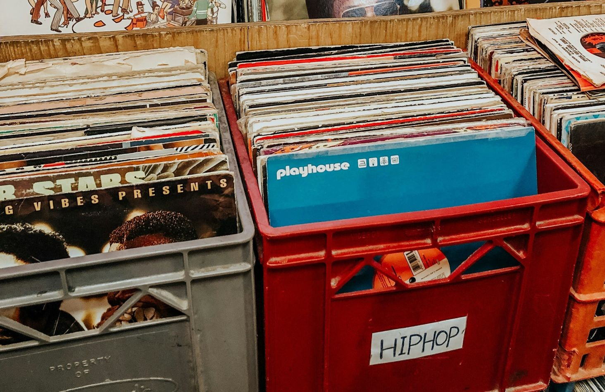

Backorder List
Some records sell out faster than we can restock them, so this page tracks what is already on order and roughly when it should land on our shelves. If you want one of these held for you the day it arrives, add your name to the list on the Join the List page and we will text you when it is in.

Coming In Soon
| Artist | Title | Genre | ETA |
|---|---|---|---|
| Fleetwood Mac | Rumours | Rock | Nov 20 |
| Kendrick Lamar | Love | Hip-Hop | Nov 22 |
| Miles Jone | Kind of Blue | Jazz | Nov 25 |
Dates are estimates from our distributors and can shift by a few days. We will update this page as soon as anything changes.